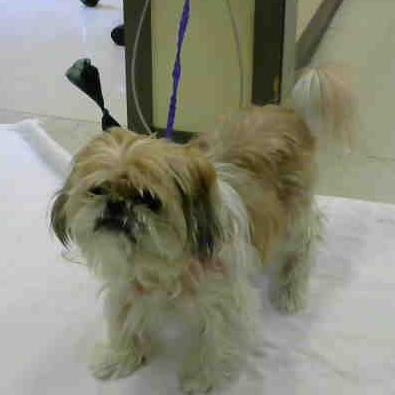
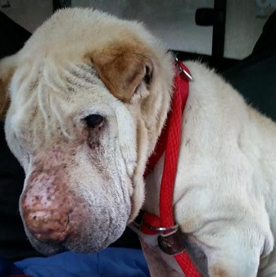

Seattle area senior dogs in need

Brandi
Brandi's owner recently passed away and she is looking for a new home. She is a very nice little dog and would love a home with an older couple or person. She has done ok with other small breed dogs here but we are unsure about cats. Come meet this lovely lady today.

Eleanor
Hello my name is Eleanor I am a very friendly 12 year old Shih Tzu/ Poodle mix, who is currently searching for a warm home and a comfy lap where I can get all the love and cuddles that I deserve. I came to the shelter with really bad teeth, but the staff here took care of all of that. I also have chronic dry eye and will need life long medication for that. I would love to get to know you, so please come visit me a AVHS!

Honeybee
Meet Miss Honeybee! She is the funniest lady.....she is a mini purebred 11 year old shar pei, 30lbs....she was originally found a stray in Los Angeles in an overcrowded shelter, so we got this darling little ole lady up here to Seattle and give her a chance.
We immediately got her into the vet and found she is deaf and blind....BUT not permanently!!! Her loss of sight is caused from dry eye being left untreated and since we have been treating the layers of pigment have been slowly going away and no signs of dry eye so they are healing!!! Paws are crossed for full vision!
She gets along just fine and once she knows the layout just rarely bumps into things, she always knows when it is breakfast and dinner time and makes it known if you are not punctual! She is full of life and personality. She is healthy otherwise and gets around just fine. She so deserves to finish living out her life in a healthy loving environment. She does great taking her eye drops which she will need the rest of her life.
She does great with other dogs unless they try to sleep with her..she is so funny ...she even uses the doggie door! Loves being outside....finds things to scratch her back with and just plain knows what she wants in life! It only takes her a minute when a stranger walks in the door...the only time she barks to let us know....in case we couldn't see them!! Because she is a senior she also puts in for her naps!
Please contact Kelly at K9WRINKLES@AOL.COM if you are interested in adopting or fostering. You will not find Honeybee or any of the MEOW dogs at the cat shelter...all MEOW dogs are in foster homes. Thank you for looking to adopt not shop!

Lady
Lady had several small mammary masses removed (breast cancer). These masses were small, but there is a chance they could come back or develop in other locations. Interested adopters should plan to monitor her regularly for these. We also suspect Lady has arthritis. She does very well with arthritis medication and should continue lifelong treatment to keep her comfortable in her golden years.

Lucy Lynn
Say hello to little Lucy Lynn, one of our new rescue arrivals! This 8 year old Pomeranian lady is looking forward to finding her new forever home in the Seattle area. Lucy Lynn came to our rescue after her owner passed away and she had no one to care for her. Since then, Lucy Lynn has been visibly saddened by the loss and major change to her life, but has been making great strides in our care as we dote on her with cuddles, attention, and affection! Lucy Lynn is a very sweet girl who loves to be on laps or stretched out on her back for afternoon naps, but she has quite the spry side, too! Lucy Lynn is easy on the eyes for certain, but you cannot imagine how cute she is when she romps with you and chases you around the room playfully. When Lucy Lynn is having a lot of fun, she will go into an adorable play bow and make the funniest little sounds! We haven’t found Lucy Lynn’s favorite treat yet, but she adores the company of people (ladies especially) and would make a wonderful companion for anyone seeking a fluffy little lap dog friend. Lucy Lynn would do best as the only dog in the home and would be just fine with respectful kids 12 years old and older. Lucy Lynn can be vocal at times, so no apartments or condos for this gal. While this chapter in her life may be a sad one, Lucy Lynn hopes that you can help her write the happy ending!
Lucy Lynn is fully vetted, spayed, and microchipped. Please call 206-557-4661 for more information on Lucy Lynn!

Patty
My name is Patty and I am available for adoption at the RASKC Pet Adoption Center in Kent. I was brought in by my previous owner on 3/12/17 because of my chronic skin issues. My previous owner described me as outgoing, loving, playful.My personality color is GREEN. I am an adaptable dog who loves to go with the flow! I am outgoing and carefree, and I just can't wait to find my forever home!I am an independent dog who likes to do my own thing!My caregivers have noticed that I seem to do well with other [small dogs/large dogs]. When meeting dogs in a new home, I would do best with a slow introduction.
For more information, please reference Animal ID Number A010841 and call 206-296-3936.

Pinky
Meet Pinky! Pinky is a delightful 10 year old Chihuahua looking for a warm home in the Seattle area with lots of soft blankets to burrow into! Pinky was rescued from a shelter in California, so her story is mostly unknown. What we do know is she loves to snuggle, be carried around, and delights in a warm lap. While Pinky does get along with most other dogs, she isn't looking for a playmate. Pinky is a shy little lady and needs time to warm up to new people. She would do best in a quiet, relaxed home where she can build up her confidence and settle in. Are you looking for a TV buddy? Pinky might just be your girl!
Pinky is fully vetted, spayed, and microchipped. Please call Emerald City Pet Rescue at 206-557-4661 to meet Pinky.

Ross
This lil man is a mini cream shar pei....that is in need of someone who will finally actually care for him and about him...he is nothing but love even though he has been horrible neglected over the years.
Ross is a true gentleman, he loves dogs, people, cars, dog beds and snuggling. He lets you cut his nails, clean his ears medicate his eye.....yes, he only has one eye left...he has glaucoma and the pressure in the one eye got so high that the vessels popped so he only has one functioning eye left, it also has glaucoma but the pressures are not extreme and the eye meds will keep it down. He does also have a typical shar pei yeast infection in his ears also being treated and treatment is working!
We assume he is around 8 years of age....and hoping some big heart would love to care for Ross and show him how life should really be!!! Please contact Kelly at K9WRINKLES@AOL.COM Thank you for looking to adopt not shop!

T-bone
T-bone is a sweet senior Shar Pei with plenty of love left to give. He adores getting attention and his tail is always wagging but he is also content to be on his own. If given the choice he would rather be outside than in so the ideal situation for him would be a fenced yard with a covered area where he could just hang out in his bed regardless of the weather. He actually prefers to sleep outside but that would be a problem in the winter. He currently has hip issues so a home without stairs would be preferred. He has problems making it thru a dog door but he'll let you know when he needs to go outside.
He is very gentle with children but has issues with small dogs and cats so that would not be an option. He is good with older dogs but his mobility issues sometimes makes it hard for him to get out of the way which some dogs react to as aggression.
Everyone who has met T-bone instantly falls in love with him. We hope you will too. Poor T Bone only got turned into the shelter as his owner passed away....not his fault!
PLEASE EMAIL KELLY AT K9WRINKLES@AOL.COM AND SHE WILL EMAIL AN APPLICATION.
Brandi
Brandi's owner recently passed away and she is looking for a new home. She is a very nice little dog and would love a home with an older couple or person. She has done ok with other small breed dogs here but we are unsure about cats. Come meet this lovely lady today.
Eleanor
Hello my name is Eleanor I am a very friendly 12 year old Shih Tzu/ Poodle mix, who is currently searching for a warm home and a comfy lap where I can get all the love and cuddles that I deserve. I came to the shelter with really bad teeth, but the staff here took care of all of that. I also have chronic dry eye and will need life long medication for that. I would love to get to know you, so please come visit me a AVHS!
Honeybee
Meet Miss Honeybee! She is the funniest lady.....she is a mini purebred 11 year old shar pei, 30lbs....she was originally found a stray in Los Angeles in an overcrowded shelter, so we got this darling little ole lady up here to Seattle and give her a chance.
We immediately got her into the vet and found she is deaf and blind....BUT not permanently!!! Her loss of sight is caused from dry eye being left untreated and since we have been treating the layers of pigment have been slowly going away and no signs of dry eye so they are healing!!! Paws are crossed for full vision!
She gets along just fine and once she knows the layout just rarely bumps into things, she always knows when it is breakfast and dinner time and makes it known if you are not punctual! She is full of life and personality. She is healthy otherwise and gets around just fine. She so deserves to finish living out her life in a healthy loving environment. She does great taking her eye drops which she will need the rest of her life.
She does great with other dogs unless they try to sleep with her..she is so funny ...she even uses the doggie door! Loves being outside....finds things to scratch her back with and just plain knows what she wants in life! It only takes her a minute when a stranger walks in the door...the only time she barks to let us know....in case we couldn't see them!! Because she is a senior she also puts in for her naps!
Please contact Kelly at K9WRINKLES@AOL.COM if you are interested in adopting or fostering. You will not find Honeybee or any of the MEOW dogs at the cat shelter...all MEOW dogs are in foster homes. Thank you for looking to adopt not shop!
Lady
Lady had several small mammary masses removed (breast cancer). These masses were small, but there is a chance they could come back or develop in other locations. Interested adopters should plan to monitor her regularly for these. We also suspect Lady has arthritis. She does very well with arthritis medication and should continue lifelong treatment to keep her comfortable in her golden years.
Lucy Lynn
Say hello to little Lucy Lynn, one of our new rescue arrivals! This 8 year old Pomeranian lady is looking forward to finding her new forever home in the Seattle area. Lucy Lynn came to our rescue after her owner passed away and she had no one to care for her. Since then, Lucy Lynn has been visibly saddened by the loss and major change to her life, but has been making great strides in our care as we dote on her with cuddles, attention, and affection! Lucy Lynn is a very sweet girl who loves to be on laps or stretched out on her back for afternoon naps, but she has quite the spry side, too! Lucy Lynn is easy on the eyes for certain, but you cannot imagine how cute she is when she romps with you and chases you around the room playfully. When Lucy Lynn is having a lot of fun, she will go into an adorable play bow and make the funniest little sounds! We haven’t found Lucy Lynn’s favorite treat yet, but she adores the company of people (ladies especially) and would make a wonderful companion for anyone seeking a fluffy little lap dog friend. Lucy Lynn would do best as the only dog in the home and would be just fine with respectful kids 12 years old and older. Lucy Lynn can be vocal at times, so no apartments or condos for this gal. While this chapter in her life may be a sad one, Lucy Lynn hopes that you can help her write the happy ending!
Lucy Lynn is fully vetted, spayed, and microchipped. Please call 206-557-4661 for more information on Lucy Lynn!
Patty
My name is Patty and I am available for adoption at the RASKC Pet Adoption Center in Kent. I was brought in by my previous owner on 3/12/17 because of my chronic skin issues. My previous owner described me as outgoing, loving, playful.My personality color is GREEN. I am an adaptable dog who loves to go with the flow! I am outgoing and carefree, and I just can't wait to find my forever home!I am an independent dog who likes to do my own thing!My caregivers have noticed that I seem to do well with other [small dogs/large dogs]. When meeting dogs in a new home, I would do best with a slow introduction.
For more information, please reference Animal ID Number A010841 and call 206-296-3936.
Pinky
Meet Pinky! Pinky is a delightful 10 year old Chihuahua looking for a warm home in the Seattle area with lots of soft blankets to burrow into! Pinky was rescued from a shelter in California, so her story is mostly unknown. What we do know is she loves to snuggle, be carried around, and delights in a warm lap. While Pinky does get along with most other dogs, she isn't looking for a playmate. Pinky is a shy little lady and needs time to warm up to new people. She would do best in a quiet, relaxed home where she can build up her confidence and settle in. Are you looking for a TV buddy? Pinky might just be your girl! Pinky is fully vetted, spayed, and microchipped. Please call Emerald City Pet Rescue at 206-557-4661 to meet Pinky.
Ross
This lil man is a mini cream shar pei....that is in need of someone who will finally actually care for him and about him...he is nothing but love even though he has been horrible neglected over the years. Ross is a true gentleman, he loves dogs, people, cars, dog beds and snuggling. He lets you cut his nails, clean his ears medicate his eye.....yes, he only has one eye left...he has glaucoma and the pressure in the one eye got so high that the vessels popped so he only has one functioning eye left, it also has glaucoma but the pressures are not extreme and the eye meds will keep it down. He does also have a typical shar pei yeast infection in his ears also being treated and treatment is working! We assume he is around 8 years of age....and hoping some big heart would love to care for Ross and show him how life should really be!!! Please contact Kelly at K9WRINKLES@AOL.COM Thank you for looking to adopt not shop!
T-bone
T-bone is a sweet senior Shar Pei with plenty of love left to give. He adores getting attention and his tail is always wagging but he is also content to be on his own. If given the choice he would rather be outside than in so the ideal situation for him would be a fenced yard with a covered area where he could just hang out in his bed regardless of the weather. He actually prefers to sleep outside but that would be a problem in the winter. He currently has hip issues so a home without stairs would be preferred. He has problems making it thru a dog door but he'll let you know when he needs to go outside. He is very gentle with children but has issues with small dogs and cats so that would not be an option. He is good with older dogs but his mobility issues sometimes makes it hard for him to get out of the way which some dogs react to as aggression. Everyone who has met T-bone instantly falls in love with him. We hope you will too. Poor T Bone only got turned into the shelter as his owner passed away....not his fault!
PLEASE EMAIL KELLY AT K9WRINKLES@AOL.COM AND SHE WILL EMAIL AN APPLICATION.